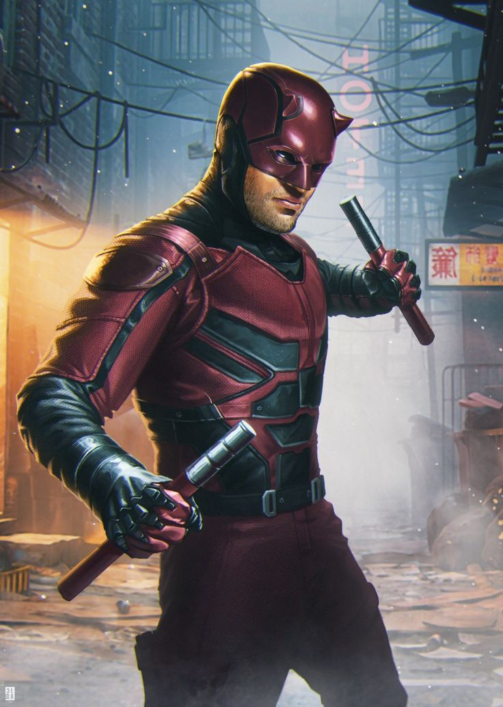

SEU HEROI JÁ ESTÁ A CAMINHO!
Aguarde onde está e não se desespere, um dos nossos heróis designados já está chegando ao seu local.
Nascido na problemática área de Nova York chamada Hells'kitchen, o Demolidor age como uma forma de justiça única, para alguns é como um anjo para aqueles no lado errado da lei, é como uma assombração e um sinal de más tempos, embora poucos concordem com seu vigilantismo, é inegável que por trás deste uniforme existe um bom homem, com um bom coração que acredita no bem e que tem esperanças, por um amanhã melhor.
Homem sem medo
DEMOLIDOR
desenvolvido por grupo 3!